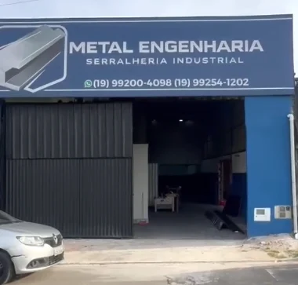

O começo na bancada
A Metal Engenharia nasceu em uma oficina pequena, com uma bancada emprestada e ferramentas de segunda mão. Os primeiros pedidos vieram de vizinhos e comerciantes que precisavam de reparos e peças sob medida.
História fictícia criada para apresentação e validação da Metal Engenharia.

A Metal Engenharia nasceu em uma oficina pequena, com uma bancada emprestada e ferramentas de segunda mão. Os primeiros pedidos vieram de vizinhos e comerciantes que precisavam de reparos e peças sob medida.
Quando uma máquina quebrou no meio do primeiro pedido de grande porte, a equipe reorganizou a produção, dividiu etapas com uma oficina parceira e manteve o cliente informado até a entrega. A experiência mudou a forma de planejar cada trabalho.
Com o tempo, a equipe ampliou a oficina e passou a fabricar portões e estruturas maiores. O cuidado que começou nos reparos seguiu junto com ela, da primeira medida ao último ajuste na montagem.